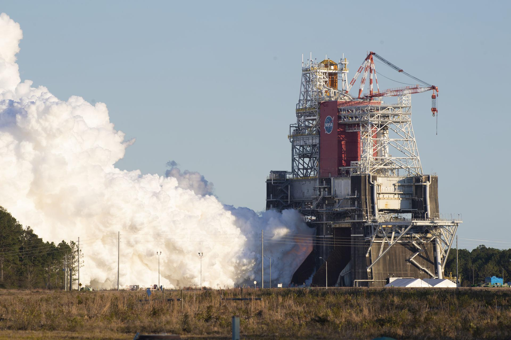

An 11th-grade researcher in the Gifted & Talented Intern/Mentor Program at Centennial High School.
I would like to thank Ms. Ireland for her guidance throughout Intern/Mentor and her help throughout this year. She carefully walked us through the entire research process. One thing that helped me a lot was learning how to conduct data collection properly, which helped me understand how to gather evidence and build a credible argument. Coming in with no prior research experience, she taught me how to conduct and produce research properly. These skills carried over onto my internship very well, and now I am even more interested in getting into research again in the future.
She made a challenging research process feel manageable, and even though our class only met once a week, she still made a big impact on my growth. Thank you, Ms. Ireland!

For my internship I worked at CALCE, the Center for Advanced Life Cycle Engineering at the University of Maryland, under Professor Michael Pecht, where I contributed to co-authoring two research papers. It gave me hands-on experience with how professional research is actually built, reviewed, and refined.
Beyond high school, I plan to study and build a career in computer engineering and computer science, fields that increasingly power everything from launch guidance systems to the data analysis behind research like this. The same instinct that drew me to this project, taking a complex system apart to understand what really drives it, is what draws me to engineering.